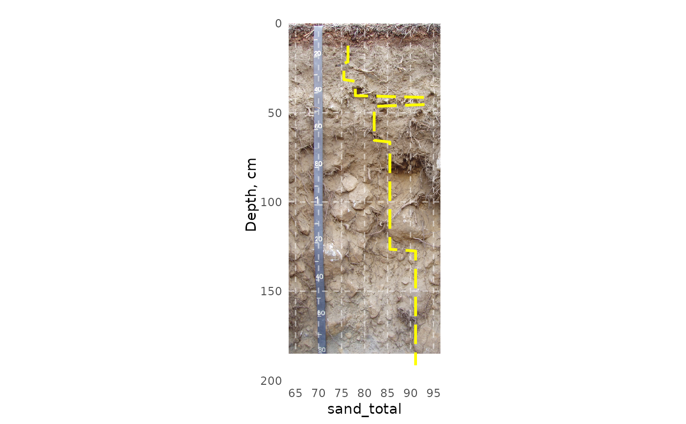

soil profile property graphs with 'calibrated' pit photo backdrop.
Usage
spg(
spc,
filename,
prop,
destfile = NULL,
depth_min = 0,
depth_max = 200,
prop_min = NULL,
prop_max = NULL,
spline = FALSE,
midpoint = FALSE,
xlab = prop,
ylab = "Depth, cm",
no_data_value = NULL,
panel_ontop = TRUE,
prop_linetype = "longdash",
prop_linewidth = 1,
prop_color = "yellow",
prop_breaks = 6
)Arguments
- spc
SoilProfileCollection
- filename
filename
- prop
character. Property column name
- destfile
Optional: output filename
- depth_min
Minimum image depth (cm)
- depth_max
Maximum image depth (cm)
- prop_min
Property minimum value
- prop_max
Property maximum value
- spline
Default:
FALSE- midpoint
Default:
FALSEIfspline=FALSEuse midpoints of horizons?- xlab
x-axis label
- ylab
y-axis label
- no_data_value
Replacement value for
NAinprop- panel_ontop
Default:
TRUE- prop_linetype
Default:
longdash- prop_linewidth
Default:
1- prop_color
Default:
"yellow"- prop_breaks
Default:
6
Examples
# \donttest{
library(soilDB)
spc <- readRDS(system.file("extdata", "aecpedons.rds",
package = "SoilProfileGraphs"))[4, ]
lab <- soilDB::fetchLDM(spc$pedlabsampnum)
#> single result set, returning a data.frame
#> converting profile IDs from integer to character
spg(
system.file("extdata",
"sueredo.png",
package = "SoilProfileGraphs"),
spc = lab,
prop = "sand_total",
depth_max = 185,
prop_min = 65,
prop_max = 95
)
#> 2 depth range(s) with missing analytical data removed from 34504.
#> Warning: Removed 12 rows containing missing values or values outside the scale range
#> (`geom_path()`).

# }